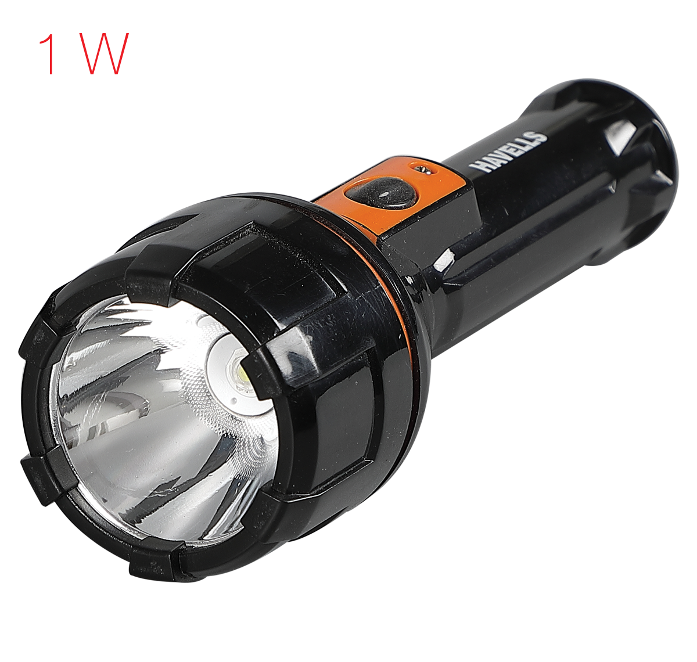
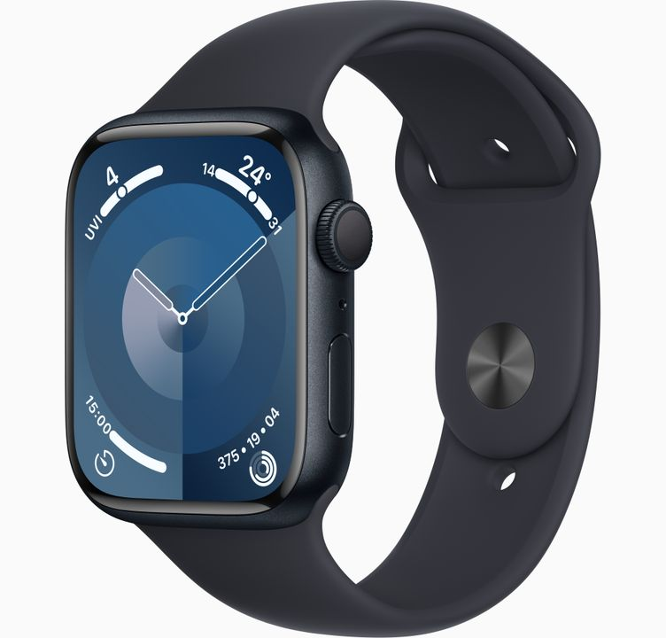

Google Lens VS MobileNet
Google Lens: Cello Pure Steel-X Bottle
MobileNet: Cello Bottle
Result: Both answer are accurate

Google Lens: Havells Beam10 Torch
MobileNet: Torch
Result: Google lens is accurate
Google Lens: Monte And Jardin Black Blanket
MobileNet: Blanket
Result: Google lens is more accurate
Google Lens: Bose Headphones
MobileNet: Headphones
Result: Google lens is more accurate

Google Lens: Apple Series 7 Watch
MobileNet: Smart Watch
Result: Google lens is more accurate
Final Result: Google lens is more accurate as it gave me all the correct answers.
 Google Lens: Cello Pure Steel-X Bottle
Google Lens: Cello Pure Steel-X Bottle
Google Lens: Cello Pure Steel-X Bottle
Google Lens: Cello Pure Steel-X Bottle
 Google Lens: Bose Headphones
Google Lens: Bose Headphones